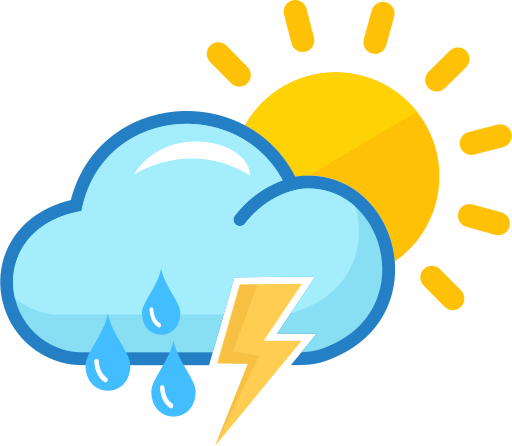

About
Jerusalem is a city in the Middle East. It is considered a holy city by three major religions. It is home to many important religious sites, including the Western Wall, the Church of the Holy Sepulchre, and the Al-Aqsa Mosque.
Weather

- Temperature: 9 °C
- Wind Speed: 10 km/h
- Wind Chill: